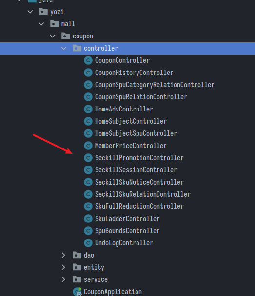
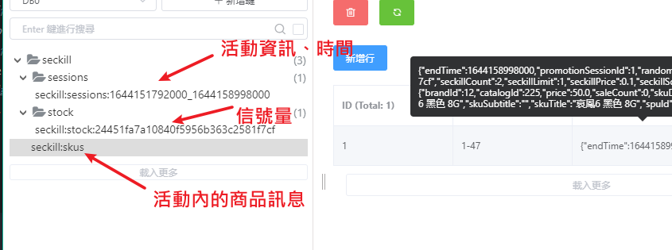
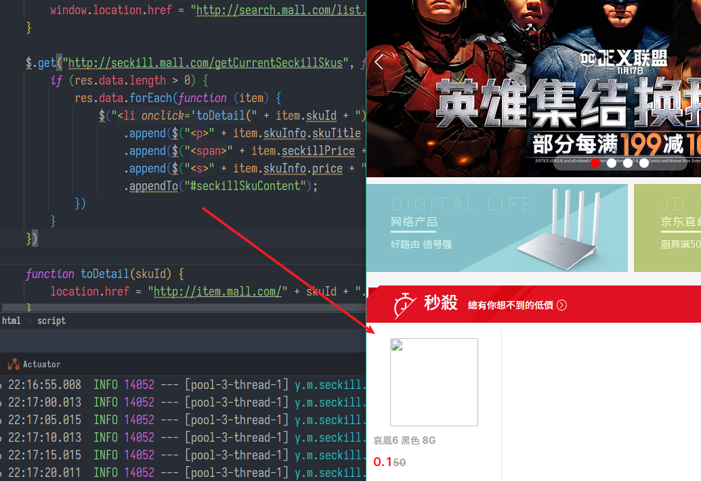

秒殺優惠模組、Cron表達式
SpringBoot微服務項目筆記-23
秒殺優惠活動
流程

- 秒殺分兩部分，一是營運人員後台系統新增秒殺場次到DB，然後關聯商品到場次中
- 後台系統新增場次隸屬於Coupon優惠模組之下

- 這邊把活動的訊息封裝到資料庫，大部分生成器都做好了，只有少數搜尋條件等等要調整，就不一一列出
網關
-
注意，後台是網址帶有
/api/，請求來自renren-fast-admin的(例如營運人員上架商品、促銷活動)，再重寫URL轉發給其他模組 -
用戶訪問商城網站，是來自nginx轉發的，斷言是
Host=cart.mall.com -
application.yml
- id: coupon_route
uri: lb://coupon
predicates:
- Path=/api/coupon/**
filters:
- RewritePath=/api/(?<segment>.*),/$\{segment}
- id: mall_seckill_route
uri: lb://seckill
predicates:
- Host=seckill.mall.com
秒殺模組
- 這邊負責實際業務邏輯的執行，秒殺有瞬間高併發的特點，必須要做限流＋異步＋緩存 + 頁面靜態化+ 獨立部署，還需要處理定時任務等等
- 定時任務將最近三天的場次 + 關聯商品上傳到redis中
- 高併發用redis
Cron表達式
- 用來定義定時任務的週期
- 由6個空格分開7個域
| 域 | 是否必填 | 值以及範圍 | 通配符 |
|---|---|---|---|
| 秒 | 是 | 0-59 | , - * / |
| 分 | 是 | 0-59 | , - * / |
| 時 | 是 | 0-23 | , - * / |
| 日 | 是 | 1-31 | , - * ? / L W |
| 月 | 是 | 1-12 或 JAN-DEC | , - * / |
| 周 | 是 | 1-7 或 SUN-SAT | , - * ? / L # |
| 年 | 否 | 1970-2099 | , - * / |
- 最低單位是秒，第七位的年可以省略
-表示之間，在秒的域寫1-3表示1,2,3秒都要執行一次/表示間隔週期，在秒的域寫5/10表示從第5秒開始，每10秒執行一次*表示每，?表示不指定(例如要在每月的8號觸發一個操作，但不關心是周幾0 0 0 8 * ?)- 大致懂就好，其他不用太關心，很多線上工具可以生成
Spring中的cron
- 在類上啟用
@Component
@EnableScheduling
public class HelloScheduled {
- 在方法使用
@Scheduled(cron = "*/5 * * ? * 4")
public void hello() {
- 設定在
spring.task.scheduling
坑
-
在Spring中表達式是6位組成，不允許第七位的年份
-
在周幾的的位置，1-7代表周一到周日
-
預設會阻塞，解法:
- 把業務提交到線程池，並且設定線程池大小，然而某些版本有bug
CompletableFuture.runAsync(() -> { },execute);
// application.properties
spring.task.scheduling.pool.size: 5
- 使用Spring的異步任務
Spring的異步任務
- 在類上啟用
@EnableAsync
public class HelloScheduled {
- 在方法使用
@Async
@Scheduled(cron = "*/5 * * ? * 4")
public void hello() {
log.info("hello...");
try {
TimeUnit.SECONDS.sleep(3);
} catch (InterruptedException e) {
e.printStackTrace();
}
- 設定在
spring.task.execution，例如:
# application.properties
spring.task.execution.pool.core-size=10
spring.task.execution.pool.max-size=50
上架秒殺商品
定時任務
- 於可用性考量，可能有多台機器被下了排程任務，所以需要用一個分布式鎖來防止重複上架
- 測試環境下每5秒掃描一次
@Service
public class SeckillScheduled {
@Autowired
private SeckillService seckillService;
@Autowired
private RedissonClient redissonClient;
// 秒殺商品上架功能的鎖
private final String upload_lock = "seckill:upload:lock";
@Scheduled(cron = "*/5 * * * * ? ")
// @Scheduled(cron = "0 0 3 * * ? ")
public void uploadSeckillSkuLatest3Days() {
// 重複上架先不處理
log.info("上架秒殺的商品...");
// 分佈式鎖
RLock lock = redissonClient.getLock(upload_lock);
try {
// 加鎖
lock.lock(10, TimeUnit.SECONDS);
seckillService.uploadSeckillSkuLatest3Days();
} catch (Exception e) {
e.printStackTrace();
} finally {
lock.unlock();
}
}
}
上架服務
- SeckillServiceImpl.java
- 遠程調用coupon模組查詢出最近三天的所有活動(查SQL，比對當前時間與活動設定的時間)，返回
List<SeckillSessionWithSkusVo> - 裡面包含了活動場次，以及關聯的商品sku訊息
- 遠程調用coupon模組查詢出最近三天的所有活動(查SQL，比對當前時間與活動設定的時間)，返回
@Override
public void uploadSeckillSkuLatest3Days() {
// 掃描最近三天的商品需要參加秒殺的活動
R lates3DaySession = couponFeignService.getLates3DaySession();
if (lates3DaySession.getCode() == 0) {
// 上架商品
List<SeckillSessionWithSkusVo> sessionData = lates3DaySession.getData("data",
new TypeReference<List<SeckillSessionWithSkusVo>>() {
});
// 緩存到Redis
// 緩存活動信息
saveSessionInfos(sessionData);
// 緩存活動的關聯商品信息
saveSessionSkuInfo(sessionData);
}
}
緩存活動信息
- 緩存活動信息至redis(redis中的List類型)
- 緩存活動場次信息，每一個場次存儲的類型都是List，多場次就是多條List類型
- 用
redisTemplate.opsForList().leftPushAll(key, skuIds);插入
- 用
- redis中每個場次的開始時間和結束時間不同，用
seckill:sessions:start_end作為key(start和end都轉換為Long時間戳易於比較，帶年月日) - 將場次
sessionId+skuId拼接成String，所有商品ID塞進List<String>作為value
- 緩存活動場次信息，每一個場次存儲的類型都是List，多場次就是多條List類型
private final String SESSION__CACHE_PREFIX = "seckill:sessions:";
private final String SECKILL_CHARE_PREFIX = "seckill:skus";
private final String SKU_STOCK_SEMAPHORE = "seckill:stock:"; //+商品隨機碼
/**
* 緩存秒殺活動信息
* @param sessions
*/
private void saveSessionInfos(List<SeckillSessionWithSkusVo> sessions) {
if (!CollectionUtils.isEmpty(sessions))
sessions.stream().forEach(session -> {
// 獲取當前活動的開始和結束時間的時間戳
long startTime = session.getStartTime().getTime();
long endTime = session.getEndTime().getTime();
// 存入到Redis中的key
String key = SESSION__CACHE_PREFIX + startTime + "_" + endTime;
// 判斷Redis中是否有該信息，如果沒有才進行添加
Boolean hasKey = redisTemplate.hasKey(key);
// 緩存活動信息
if (!hasKey) {
// 獲取到活動中所有商品的skuId
List<String> skuIds = session.getRelationSkus().stream()
.map(item -> item.getPromotionSessionId() + "-" + item.getSkuId().toString()).collect(Collectors.toList());
redisTemplate.opsForList().leftPushAll(key, skuIds);
}
});
}
緩存商品信息
- 緩存商品信息至redis中的hash類型
- redis的key為
seckill:skus - hash-key:
session_id(活動id) - hash-value: SecKillSkuRelationTo包裝成的json串
- SecKillSkuRelationTo的組成:
- sku的詳細信息(skuInfoEntity 名字、圖片)
- sku的秒殺信息(SeckillSkuRelation + 當前商品秒殺的開始、結束時間)
- 隨機碼randomCode(防有心人作弊搶票，沒有隨機碼的請求被打回)
- 分佈式信號量(使用信號量做限流，就是之前的數人關門者，只允許多少訪問請求能夠去到DB查庫存)
- 使用redisson實現，redis.getSemaphore(商品隨機碼);
- 信號量其實就是秒殺活動設定的商品量，我就只要賣這麼多件
/**
* 緩存秒殺活動所關聯的商品信息
*/
private void saveSessionSkuInfo(List<SeckillSessionWithSkusVo> sessions) {
if (!CollectionUtils.isEmpty(sessions))
sessions.stream().forEach(session -> {
// 準備hash操作，綁定hash
BoundHashOperations<String, Object, Object> operations =
redisTemplate.boundHashOps(SECKILL_CHARE_PREFIX);
session.getRelationSkus().stream().forEach(seckillSkuVo -> {
// 生成隨機碼
String token = UUID.randomUUID().toString().replace("-", "");
String redisKey =
seckillSkuVo.getPromotionSessionId().toString() + "-" + seckillSkuVo.getSkuId().toString();
if (!operations.hasKey(redisKey)) {
// 緩存商品信息
SeckillSkuRedisTo redisTo = new SeckillSkuRedisTo();
Long skuId = seckillSkuVo.getSkuId();
// 先查詢sku的基本信息，調用遠程服務
R info = productFeignService.getInfo(skuId);
if (info.getCode() == 0) {
SkuInfoVo skuInfo = info.getData("skuInfo", new TypeReference<SkuInfoVo>() {
});
redisTo.setSkuInfo(skuInfo);
}
// sku的秒殺信息
BeanUtils.copyProperties(seckillSkuVo, redisTo);
// 設置當前商品的秒殺時間信息
redisTo.setStartTime(session.getStartTime().getTime());
redisTo.setEndTime(session.getEndTime().getTime());
// 設置商品的隨機碼（防止惡意攻擊）
redisTo.setRandomCode(token);
// 序列化json格式存入Redis中
String seckillValue = JSON.toJSONString(redisTo);
operations.put(seckillSkuVo.getPromotionSessionId().toString() + "-" + seckillSkuVo.getSkuId().toString(), seckillValue);
// 如果當前這個場次的商品庫存信息已經上架就不需要上架
// 使用庫存作為分佈式Redisson信號量（限流）
// 使用庫存作為分佈式信號量，信號量名字就是UUID隨機產生的token
RSemaphore semaphore = redissonClient.getSemaphore(SKU_STOCK_SEMAPHORE + token);
// 商品可以秒殺的數量作為信號量
semaphore.trySetPermits(seckillSkuVo.getSeckillCount());
}
});
});
}
成功上架
- Redis中會有三條數據

於首頁展示
- 當初商品首頁下面那排

- SeckillController.java
/**
* 當前時間可以參與秒殺的商品信息
*/
@GetMapping(value = "/getCurrentSeckillSkus")
@ResponseBody
public R getCurrentSeckillSkus() {
// 獲取到當前可以參加秒殺商品的信息
List<SeckillSkuRedisTo> vos = seckillService.getCurrentSeckillSkus();
return R.ok().setData(vos);
}
- SeckillServiceImpl.java
@Override
public List<SeckillSkuRedisTo> getCurrentSeckillSkus() {
// 確定當前屬於哪個秒殺場次
long currentTime = System.currentTimeMillis();
// 從Redis中查詢到所有key以seckill:sessions開頭的所有數據
Set<String> keys = redisTemplate.keys(SESSION__CACHE_PREFIX + "*");
for (String key : keys) {
// seckill:sessions:1594396764000_1594453242000
String replace = key.replace(SESSION__CACHE_PREFIX, "");
String[] s = replace.split("_");
// 獲取存入Redis商品的開始時間
long startTime = Long.parseLong(s[0]);
// 獲取存入Redis商品的結束時間
long endTime = Long.parseLong(s[1]);
// 判斷是否是當前秒殺場次
if (currentTime >= startTime && currentTime <= endTime) {
// 獲取這個秒殺場次需要的所有商品信息
List<String> range = redisTemplate.opsForList().range(key, -100, 100);
BoundHashOperations<String, String, String> hasOps =
redisTemplate.boundHashOps(SECKILL_CHARE_PREFIX);
assert range != null;
List<String> listValue = hasOps.multiGet(range);
if (listValue != null && listValue.size() >= 0) {
List<SeckillSkuRedisTo> collect = listValue.stream().map(item -> {
String items = (String) item;
SeckillSkuRedisTo redisTo = JSON.parseObject(items, SeckillSkuRedisTo.class);
// redisTo.setRandomCode(null);若當前秒殺ㄏ開始，需要Ban掉隨機碼
return redisTo;
}).collect(Collectors.toList());
return collect;
}
break;
}
}
判斷商品是否正在活動
- 這是在商品詳情頁(Product下的item.html)展示的，參與秒殺活動的用戶其實就是點進商品詳情
- 只要判斷時間正確，本來下訂單的按鈕就會變成"參與搶購"
- SeckillController.java
- 被Product模組feign遠程調用
/**
* 根據skuId查詢商品是否參加秒殺活動
*/
@GetMapping(value = "/sku/seckill/{skuId}")
@ResponseBody
public R getSkuSeckilInfo(@PathVariable("skuId") Long skuId) {
SeckillSkuRedisTo to = seckillService.getSkuSeckilInfo(skuId);
return R.ok().setData(to);
}
- SeckillServiceImpl.java
/**
* 根據skuId查詢商品是否參加秒殺活動
*/
@Override
public SeckillSkuRedisTo getSkuSeckilInfo(Long skuId) {
// 找到所有需要秒殺的商品的key信息---seckill:skus
BoundHashOperations<String, String, String> hashOps = redisTemplate.boundHashOps(SECKILL_CHARE_PREFIX);
// 拿到所有的key
Set<String> keys = hashOps.keys();
if (keys != null && keys.size() > 0) {
// 正則表達式進行匹配
String reg = "\\d-" + skuId;
for (String key : keys) {
// 如果匹配上了
if (Pattern.matches(reg, key)) {
// 從Redis中取出商品數據
String redisValue = hashOps.get(key);
// 進行序列化
SeckillSkuRedisTo redisTo = JSON.parseObject(redisValue, SeckillSkuRedisTo.class);
Long currentTime = System.currentTimeMillis();
Long startTime = redisTo.getStartTime();
Long endTime = redisTo.getEndTime();
// 如果當前時間大於等於秒殺活動開始時間並且要小於活動結束時間
if (currentTime >= startTime && currentTime <= endTime) {
return redisTo;
}
redisTo.setRandomCode(null);
return redisTo;
}
}
}
return null;
}
- SkuInfoServiceImpl.java
- 修改當初Product模組的返回商品詳情方法
// 商品詳情
@Override
public SkuItemVo item(Long skuId) throws ExecutionException, InterruptedException {
/*
省略
*/
// 查詢當前sku是否參與秒殺活動
CompletableFuture<Void> seckillFuture = CompletableFuture.runAsync(() -> {
// 遠程調用查詢當前sku是否參與秒殺優惠活動
R skuSeckilInfo = seckillFeignService.getSkuSeckilInfo(skuId);
if (skuSeckilInfo.getCode() == 0) {
// 查詢成功
SeckillSkuVo seckilInfoData = skuSeckilInfo.getData("data", new TypeReference<SeckillSkuVo>() {
});
skuItemVo.setSeckillSkuVo(seckilInfoData);
if (seckilInfoData != null) {
long currentTime = System.currentTimeMillis();
if (currentTime > seckilInfoData.getEndTime()) {
skuItemVo.setSeckillSkuVo(null);
}
}
}
}, executor);
// 等到所有任務都完成
CompletableFuture.allOf(saleAttrFuture, descFuture, baseAttrFuture, imageFuture).get();
return skuItemVo;
}
修改前端
- item.html
<div class="box-btns-two" th:if="${item.seckillSkuVo == null }">
<a class="addToCart" href="#" th:attr="skuId=${item.info.skuId}">
加入購物車
</a>
</div>
<div class="box-btns-two"
th:if="${item.seckillSkuVo != null && (#dates.createNow().getTime() >= item.seckillSkuVo.startTime && #dates.createNow().getTime() <= item.seckillSkuVo.endTime)}">
<a class="seckill" href=""
th:attr="skuId=${item.info.skuId},sessionId=${item.seckillSkuVo.promotionSessionId},code=${item.seckillSkuVo.randomCode}">
立即搶購
</a>
</div>
- 發起搶購請求
$(".seckill").click(function () {
var isLogin = [[${session.loginUser != null}]]; //true
if (isLogin) {
var killId = $(this).attr("sessionid") + "-" + $(this).attr("skuid");
var code = $(this).attr("code");
var num = $("#productNum").val();
location.href = "http://seckill.mall.com/kill?killId=" + killId + "&key=" + code + "&num=" + num;
} else {
alert("秒殺請先登入");
}
return false;
});
執行秒殺
- 有兩種實現方法，第一是購物車法，秒殺其實只是優惠價格不同，其他都照舊沿用
- 優點是簡單、業務邏輯與數據模型統一
- 缺點是可能導致各系統流量都很大(購物車服務、商品服務、訂單服務…)

- 第二種是消息隊列法(此處採用)
- 在定時任務上架活動時，提早將庫存鎖定。例如DB一次性鎖定400
- 然後秒殺直接將用户、訂單號、商品發送給mq，直接給用戶返回秒殺成功，進入地址確認、支付確認頁
- 創建訂單異步執行，由訂單服務監聽隊列
- 優點是可以扛超高併發，用戶體驗較好(用戶不用管塞車，進到隊列就完事了非常快)

- SeckillController.java
/**
* 商品進行秒殺(秒殺開始)
*/
@GetMapping(value = "/kill")
public String seckill(@RequestParam("killId") String killId,
@RequestParam("key") String key,
@RequestParam("num") Integer num,
Model model) {
String orderSn = null;
try {
//1、判斷是否登錄
orderSn = seckillService.kill(killId, key, num);
model.addAttribute("orderSn", orderSn);
} catch (Exception e) {
e.printStackTrace();
}
return "success";
}
- SeckillServiceImpl.java
- 驗證請求、寫進隊列
/**
* 當前商品進行秒殺（秒殺開始）
*/
@Override
public String kill(String killId, String key, Integer num) throws InterruptedException {
long s1 = System.currentTimeMillis();
// 獲取當前用戶的信息
MemberResponseTo user = LoginUserInterceptor.loginUser.get();
// 獲取當前秒殺商品的詳細信息從Redis中獲取
BoundHashOperations<String, String, String> hashOps = redisTemplate.boundHashOps(SECKILL_CHARE_PREFIX);
String skuInfoValue = hashOps.get(killId);
if (StringUtils.isEmpty(skuInfoValue)) {
return null;
}
// 合法性效驗
SeckillSkuRedisTo redisTo = JSON.parseObject(skuInfoValue, SeckillSkuRedisTo.class);
Long startTime = redisTo.getStartTime();
Long endTime = redisTo.getEndTime();
long currentTime = System.currentTimeMillis();
// 判斷當前這個秒殺請求是否在活動時間區間內(效驗時間的合法性)
if (currentTime >= startTime && currentTime <= endTime) {
// 效驗隨機碼和商品id
String randomCode = redisTo.getRandomCode();
String skuId = redisTo.getPromotionSessionId() + "-" + redisTo.getSkuId();
if (randomCode.equals(key) && killId.equals(skuId)) {
// 驗證購物數量是否合理和庫存量是否充足
Integer seckillLimit = redisTo.getSeckillLimit();
// 獲取信號量
String seckillCount = redisTemplate.opsForValue().get(SKU_STOCK_SEMAPHORE + randomCode);
Integer count = Integer.valueOf(seckillCount);
// 判斷信號量是否大於0,並且買的數量不能超過庫存
if (count > 0 && num <= seckillLimit && count > num) {
// 驗證這個人是否已經買過了，如果秒殺成功，就去redis佔位，靠setIfAbsent(userId-sessionId-skuId
// SETNX 原子性處理
String redisKey = user.getId() + "-" + skuId;
// 設置自動過期(活動結束時間-當前時間)
Long ttl = endTime - currentTime;
Boolean aBoolean = redisTemplate.opsForValue().setIfAbsent(redisKey, num.toString(), ttl,
TimeUnit.MILLISECONDS);
if (aBoolean) {
// 佔位成功說明沒買過，要消費掉信號量，用try
RSemaphore semaphore = redissonClient.getSemaphore(SKU_STOCK_SEMAPHORE + randomCode);
boolean semaphoreCount = semaphore.tryAcquire(num, 100, TimeUnit.MILLISECONDS);
// 保證Redis中還有商品庫存
if (semaphoreCount) {
// 創建訂單號和訂單信息發送給MQ
// 秒殺成功 快速下單 發送消息到 MQ 整個操作時間在 10ms 左右
String timeId = IdWorker.getTimeId();
SeckillOrderTo orderTo = new SeckillOrderTo();
orderTo.setOrderSn(timeId);
orderTo.setMemberId(user.getId());
orderTo.setNum(num);
orderTo.setPromotionSessionId(redisTo.getPromotionSessionId());
orderTo.setSkuId(redisTo.getSkuId());
orderTo.setSeckillPrice(redisTo.getSeckillPrice());
rabbitTemplate.convertAndSend("order-event-exchange", "order.seckill.order", orderTo);
long s2 = System.currentTimeMillis();
log.info("耗時..." + (s2 - s1));
return timeId;
}
}
}
}
}
long s3 = System.currentTimeMillis();
log.info("耗時..." + (s3 - s1));
return null;
}
消費消息
- 在訂單模組，一樣三步驟: 綁定、監聽、消費

綁定秒殺隊列
- MyMQConfig.java
/**
* 商品秒殺隊列
* 作用：削峰，創建訂單
*/
@Bean
public Queue orderSecKillOrderQueue() {
Queue queue = new Queue("order.seckill.order.queue", true, false, false);
return queue;
}
@Bean
public Binding orderSecKillOrderQueueBinding() {
//String destination, DestinationType destinationType, String exchange, String routingKey,
// Map<String, Object> arguments
Binding binding = new Binding(
"order.seckill.order.queue",
Binding.DestinationType.QUEUE,
"order-event-exchange",
"order.seckill.order",
null);
return binding;
}
監聽秒殺隊列
- OrderSeckillListener.java
@Component
@RabbitListener(queues = "order.seckill.order.queue")
public class OrderSeckillListener {
@Autowired
private OrderService orderService;
@RabbitHandler
public void listener(SeckillOrderTo orderTo, Channel channel, Message message) throws IOException {
log.info("準備創建秒殺單的詳細信息...");
try {
orderService.createSeckillOrder(orderTo);
channel.basicAck(message.getMessageProperties().getDeliveryTag(), false);
} catch (Exception e) {
channel.basicReject(message.getMessageProperties().getDeliveryTag(), true);
}
}
}
創建秒殺訂單
- OrderServiceImpl.java
/**
* 創建秒殺單
*
* @param orderTo
*/
@Override
public void createSeckillOrder(SeckillOrderTo orderTo) {
// 保存訂單信息
OrderEntity orderEntity = new OrderEntity();
orderEntity.setOrderSn(orderTo.getOrderSn());
orderEntity.setMemberId(orderTo.getMemberId());
orderEntity.setCreateTime(new Date());
BigDecimal totalPrice = orderTo.getSeckillPrice().multiply(BigDecimal.valueOf(orderTo.getNum()));
orderEntity.setPayAmount(totalPrice);
orderEntity.setStatus(OrderStatusEnum.CREATE_NEW.getCode());
// 保存訂單
this.save(orderEntity);
// 保存訂單項信息
OrderItemEntity orderItem = new OrderItemEntity();
orderItem.setOrderSn(orderTo.getOrderSn());
orderItem.setRealAmount(totalPrice);
orderItem.setSkuQuantity(orderTo.getNum());
// 保存商品的spu信息
R spuInfo = productFeignService.getSpuInfoBySkuId(orderTo.getSkuId());
SpuInfoTo spuInfoData = spuInfo.getData("data", new TypeReference<SpuInfoTo>() {
});
orderItem.setSpuId(spuInfoData.getId());
orderItem.setSpuName(spuInfoData.getSpuName());
orderItem.setSpuBrand(spuInfoData.getBrandName());
orderItem.setCategoryId(spuInfoData.getCatalogId());
// 保存訂單項數據
orderItemService.save(orderItem);
}
小結
- 往Redis存List
redisTemplate.opsForList().leftPushAll(key, skuIds);
- 往Redis存Hash
- 這玩意乍看還有點繞，第一個是key是在redis中去查它本身的，後面的key跟value才是Hash主體
BoundHashOperations<String, Object, Object> operations =
redisTemplate.boundHashOps(SECKILL_CHARE_PREFIX);
- 給信號量命名、設定數量
// 使用庫存作為分佈式信號量，信號量名字就是UUID隨機產生的token
RSemaphore semaphore = redissonClient.getSemaphore(SKU_STOCK_SEMAPHORE + token);
// 商品可以秒殺的數量作為信號量
semaphore.trySetPermits(seckillSkuVo.getSeckillCount());
- 消費信號量
semaphore.tryAcquire
複習消息隊列用法
- 引包
spring-boot-starter-amqp - 設定MQ地址、手動確認
# MQ
spring.rabbitmq.host=localhost
spring.rabbitmq.port=5672
spring.rabbitmq.virtual-host=/
# 使用手動確認模式，關閉自動確認，防止消息丟失
spring.rabbitmq.listener.simple.acknowledge-mode=manual
- 使用JSON格式
@Configuration
public class MyRabbitConfig {
@Bean
public MessageConverter messageConverter() {
return new Jackson2JsonMessageConverter();
}
-
發訊息
rabbitTemplate.convertAndSend() -
創建、綁定隊列
@Bean
public Queue orderSecKillOrderQueue() {
Queue queue = new Queue("order.seckill.order.queue", true, false, false);
return queue;
}
@Bean
public Binding orderSecKillOrderQueueBinding() {
//...
- 監聽，要先在啟動類註解
@EnableRabbit
@Component
@RabbitListener(queues = "order.seckill.order.queue")
public class OrderSeckillListener {
@RabbitHandler
public void listener(SeckillOrderTo orderTo, Channel channel, Message message) throws IOException {
// 業務邏輯...
- 手動消費訊息
basicAck
上次修改於 2022-02-09